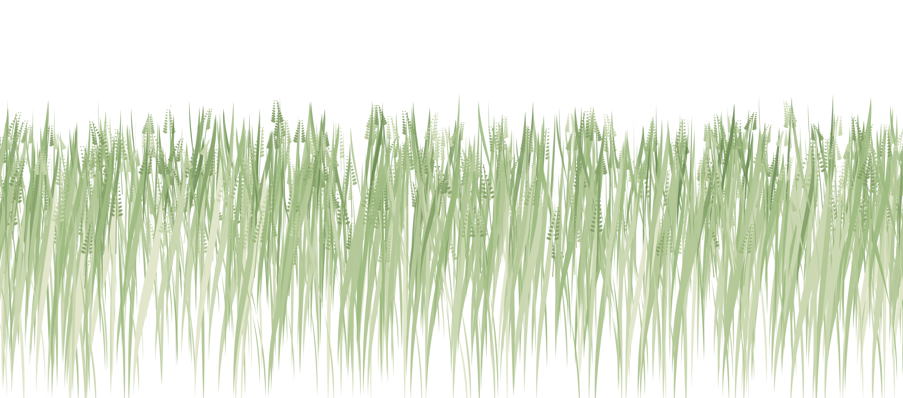
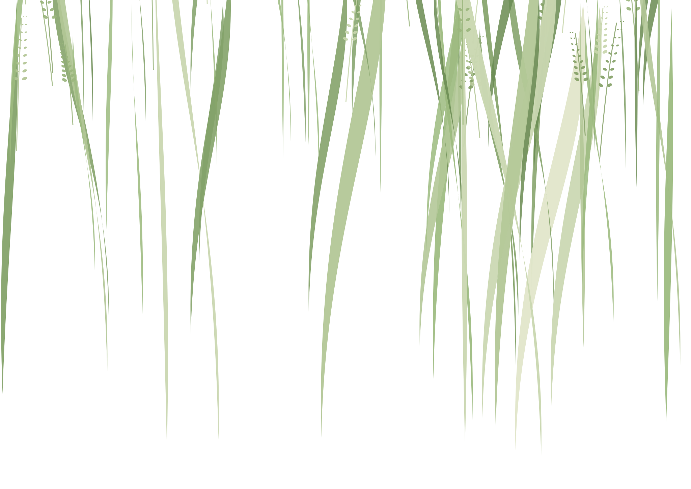
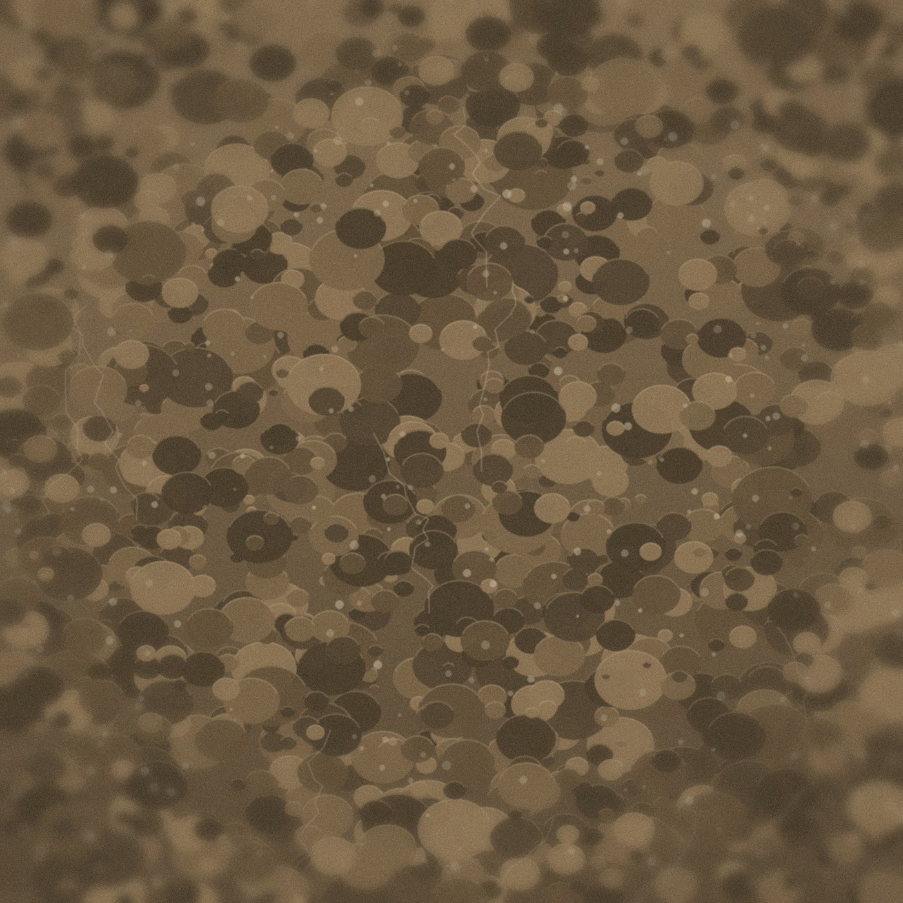

Fill the frame
Leaf
Soil
1×
2×
Uploading 2 photos
Leaf · field 1
Leaf · uploaded
Soil · uploaded
0%
52%
100%
Nashik, 7:40 am
Two photos
is the whole form.
is the whole form.
Frame the leaf. Then the soil.
Wheat · East field